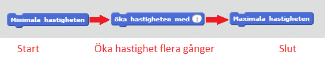
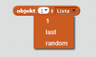
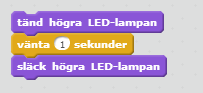
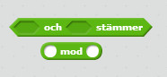

Här hittar du uppgifter som kan hjälpa sig att komma igång med dina program! Det finns två olika typer av uppgifter, Rörelse och Lysen.
Läs lite om PedaGogo om du behöver hjälp att klara föjande uppgifter.
1. Försök att ändra hastigheter från den minsta till den maximala hastigheten genom att använda öka hastighet blocket, testa gärna några olika hastighetsförändringar för att kolla hur stor skillnaderna är.
2. Den här gången ska du försöka att använda en loop för att stegvis öka hastigheten till max, och sedan en ny loop som minskar hastigheten tillbaka till minimum.
Kom ihåg: den maximala hastigheten är 255 (?) och den minimala hastigheten är ??.
1.Använd roterablocken för att styra roboten i en fyrkant och testa sedan att styra den i en cirkel.
Försök att använda loopar för att klara den här uppgiften.
Hint:En cirkel är som en fyrkant men med många fler hörn.

2.Den här gången ska du försöka att anväda roterablocken för att styra roboten i en triangel. Först med tre lika stora vinklar och sedan med tre olika stora vinklar.
Kom ihåg: hur du beräknar vinklarna
1.Använd nu vad du lärt dig om vinklar för att styra roboten framåt i sicksack. Glöm inte att försöka använda en loop!

2.Den här gången ska du få roboten att slingra sig framåt, som en orm.

Hint: du kan använda halvcirklar i svängarna.
1.I den här uppgiften ska du skapa en variabel. Döp den till Hastighet och sätt den till 200. Precis som i uppgift 2.1, använd en loop för att öka hastigeten från minimum. Den här gången får hastigheten bara nå 200, anväd dig av din nya variabel för att åstadkomma det här.
Kom ihåg: variabler kan placeras innuti de diamantformade blocken som passar bra i vissa loopar.
2.Den här gången ska du skapa en variabel AntalVarv och sätta den till 5. Skapa ett program som styr din robot runt fem varv genom att använda din nya variabel.

Hint: varibler kan även förändras med -1.
1. I den här uppgiften behöver du skapa en lista. Döp den till Hastigheter och lägg till fem värden (hastigheter). Skapa nu ett program som antingen ökar eller minskar hastigheten med de värden som finns i din lista.
 Hint: använd en loop och de block som du får med din nya lista.
Hint: använd en loop och de block som du får med din nya lista.
2.Den här gången ska du skapa en lista som innehåller värden som kan styra roboten i en fyrkant. Glöm inte att använda en loop!
Hint: du behöver bara lägga till två värden; antal cm framåt och antalet grader du ska svänga. Genom att klicka på pilen i blocket kan du väja att anväda värdet som ligger först eller det som ligger sist i din lista. Din uppgift nu är att klara att programmera följande bana, lycka till!
En bana som kombinerar saker de lärt sig men med något svårare moment typ
1. Använd tänd och släck blocken för att blinka med lysena fem gånger. Använd en loop!
Hint: Om lysena blinkar för snabbt, använd ett vänta block emellan! 2. Den här gången ska du blinka med varannan lampa fem gånger var.
1. Använd upprepa blocket och en variabel. Döp variabeln till antalBlink och anväd den för att blinka med lysena 10 gånger.
Kom ihåg: hur du skapar en variabel2. Den här gången ska du anväda samma variabel men upprepa tills bocket f¨r att blinka men varannan lampa 10 gånger.
1. I uppgift 2 i rörelse kapitlet skulle du skapa ett program som styr roboten i en fyrkant. Gör det igen men lägg till att lysena ska blinka två gånger före varje sväng.
2. Den här gången ska du återskapa programmet som styr roboten framåt i sicksack och lägga till två blinkningar av lysena före varje sväng. Blinka endast med lyset som visar åt vilket håll du skall svänga.
1. Sätt antalBlink till 0. Loopa följande 10 gånger: öka värdet på variabeln med 1, kolla om den är större än 0 och mindre än 5, i så fall ska du blinka med det vänstra lyset 3 gånger. Annars, blinka med högra 3 gånger.
2. Den här gången ska du göra samma sak men istället kolla om din variabel är ett jämnt tal och i så fall blinka med det vänstra lyset, är det ett udda tal ska du blinka med högra lyset. Gör även detta 10 gånger.
Kom ihåg: hur du kollar om det är ett jämnt tal kommerfinnaslänkhär!1. Den här uppgiften är som uppgift 4.2 men du kommer att behöva en lista. Sätt antalBlink till 1 och loopa följande 10 gånger: lägg till antalBlink i listan och öka sedan värdet med 1. Sedan ska du, med en till loop, kolla om första elementet i listan är mindre än 5 och i så fall blinka med vänstra lyset. Annars ska du blinka med det högra lyset. Ta sedan bort det första elementet ur listan. Gör detta (andra loopen) tills listan är tom.
Kom ihåg: hur du skapar en lista.2. Den här gången ska du kolla om första elementet är ett jämnt tal och i så fall blinka med vänstra lyset. Annars, om det är udda, ska du blinka med högra lyset.
Din uppgift nu är att klara att programmera föjande bana, lycka till!
En bana som kombinerar saker de lärt sig men med något svårare moment typ